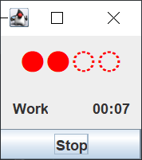

Testing and Testability
I've written about testing before in response to some struggles I was having introducing automated tests to my code base at work. That post focused mainly on safely making seams in existing code to get it under test, but didn't really consider the question of what to test or when (it's also a fairly domain specific example and was geared toward an audience of coworkers). Over time, I've gained some insight into what kinds of tests were worth writing, how to structure them, and how to design for testability.
What Kinds of Tests Are Valuable?
We'll explore this question using my favourite simple example for this topic: a stack. Consider the following Java class (the astute reader will notice a bug in the implementation; we'll get to that):
import java.util.ArrayList;
import java.util.List;
import javax.annotation.CheckReturnValue;
import javax.annotation.Nonnull;
import javax.annotation.Nullable;
import static java.util.Objects.requireNonNull;
/**
* An immutable FIFO data structure.
* <p>
* Create a stack with {@code Stack.<Type>empty()} and add elements
* using {@link #push(E)}. The top of the stack can be retrieved by calling
* {@link #peek()}, and the top-most element can be removed by calling
* {@link #pop()}. Note that since this stack implementation is immutable,
* both {@code peek()} and {@code pop()} must be called to remove and
* retain a reference to the top-most stack element.
*
* @param <E> the type of elements in this stack
*/
public class Stack<E> {
private static final Stack<?> EMPTY = new Stack<>();
/**
* @param <E> the type of elements in this stack
*
* @return an empty stack to hold elements of the desired type
*/
@SuppressWarnings("unchecked")
public static <E> Stack<E> empty() {
return (Stack<E>) EMPTY;
}
private List<E> elements = new ArrayList<>();
private Stack() {}
/**
* @param element the element to push
*
* @return a new stack containing the given element
*/
@CheckReturnValue
public Stack<E> push(@Nonnull E element) {
var stack = new Stack<E>();
stack.elements = new ArrayList<>(this.elements);
stack.elements.add(requireNonNull(
element, "Attempted to add null element to stack"));
return stack;
}
/**
* @return the top element on the stack,
* {@code null} if the stack is empty
*/
public @Nullable E peek() {
return elements.get(elements.size() - 1);
}
/**
* @return a new stack containing all but the top element
*
* @throws IllegalStateException if the stack is empty
*/
public @Nonnull Stack<E> pop() {
if (this.elements.isEmpty())
throw new IllegalStateException("Tried to pop and empty stack");
var stack = new Stack<E>();
stack.elements = new ArrayList<>(this.elements);
stack.elements.remove(elements.size() - 1);
return stack;
}
@Override
public String toString() {
return "Stack{" +
"elements=" + elements +
'}';
}
public static void main(String[] args) {
var stack = Stack.<String>empty()
.push("Hello")
.push("World");
System.out.println(stack.peek()); // => World
System.out.println(stack.pop()); // => Stack{elements=[Hello]}
}
}
What should the tests for this class look like?
Testing the API
Earlier in my career, I had absorbed from various sources the notion that "unit testing" was about testing the smallest units, namely methods, in isolation. Essentially, this meant that tests should have a one-to-one (or one-to-many for dealing with corner cases) relationship with the public API of the subject under test. Let's start there and see what the skeletal structure of the tests looks like:
import org.junit.Test;
import static org.hamcrest.MatcherAssert.assertThat;
import static org.hamcrest.Matchers.is;
public class StackTests {
@Test
public void testPush() {
// ...
}
@Test
public void testPeek() {
// ...
}
@Test
public void testPop() {
// ...
}
}
Seems sane so far. Let's start filling in the tests, starting with testPush.
We'll follow the classic Arrange-Act-Assert
(or Given-When-Then for BDD folks)
pattern so that our tests are easy to follow and work as nice, self-contained examples of usage:
@Test
public void testPush() {
// Arrange
var stack = Stack<String>.empty();
// Act
var updatedStack = stack.push("Hello").push("World");
// Assert
// Hmmm... how do we assert push worked?
}
How do we assert the correct state of the stack here?
We need some way to inspect the stack and see that it contains the elements that we just pushed.
Rigid adherence to the idea of isolating tests to a single public method is already getting us in trouble:
unless we do some bizarre reflection voodoo, we need to peek or toString our stack
in order to see what it contains.
Let's use peek:
@Test
public void testPush() {
var stack = Stack<String>.empty();
var updatedStack = stack.push("Hello").push("World");
assertThat(updatedStack.peek(), is("World"));
}
Alright, that was a little unsettling, but let's move on and see if we can better isolate our other tests.
Next up, peek:
@Test
public void testPeek() {
// Arrange
var stack = Stack<String>.empty();
// Hmmm... how do we get the stack in the right state?
// Act
var topElement = stack.peek();
// Assert
assertThat(topElement, is("Hello"));
}
We've got a similar problem as before:
we want to test peek in isolation, but how do we get elements on to the stack in the first place?
We have a few options:
- Reflection voodoo to change the internals of our stack
- An alternative constructor that takes an existing collection and adds all its elements to the stack
- Call
pushto add elements to the stack
Let's first consider the alternative constructor. This would definitely work, but it brings along a whole design activity and changes the surface area of our API; we have to answer the question: in what order do the elements of the supplied collection appear on the stack? Worse, we're now considering an API change specifically because of testing. Yes, test code should be treated as client code, but in this case, it's not strictly necessary to have this alternative constructor. DHH has referred to this idea as test-induced design damage: the notion that dogmatically following certain testing practices can lead away from the API you want and toward an API that's "easy to test".
Let's avoid changing our API, and instead use push to get our stack in the right state:
@Test
public void testPeek() {
var stack = Stack<String>.empty().push("Hello");
var topElement = stack.peek();
assertThat(topElement, is("Hello"));
}
Notice anything interesting? This is essentially the exact same test we already wrote for testPush!
Notice also that if we were writing the tests before the implementation, we'd be in the same boat.
So is the problem testing or TDD?
No, the problem, like many problems in software development, is framing.
Testing Behaviour
Let's take a step back and consider what it is we're trying to accomplish by testing. "Testing" is probably one of the worst named concepts in our industry1 because it covers so much more than just proving correctness. Tests can:
- Help you explore and learn about the problem space or solution space
- Design your system's components and APIs
- Verify and validate assumptions, both technical and business
- Protect against regression from future changes
- Act as documentation for future developers
Through this lens, we see that tests fall into two broad categories:
- Tests that aid in development, but you can throw away later; and
- Tests that you keep and run regularly
Here, we're particularly interested in the ones that we keep. If these tests are sticking around long-term, then we want to make sure they clearly communicate what the subject under test should do. Moreover, they should be focussed on intended behaviour rather than mechanism. This makes the tests less brittle and aligns them well with the goals of design aid, validator, and documentation.
What does that look like?
As a simple mnemonic, I like to start all my test names with should.
For example, we would say "a stack should..." and write the tests that fill in the blanks.
This reminds me to frame my tests around the desired behaviour of the subject under test
rather than mechanically writing a test for each public method.
An interesting side effect of framing things this way is that
it moves away from the very rigid "unit means method" notion we started with earlier.
Kent Beck himself has been intentionally vague on what exactly a "unit" is,
and I think this is the reason: a testable unit is very much dependent on context.
Here, the unit is arguably the stack, not its individual methods.
import org.junit.Test;
import static org.hamcrest.MatcherAssert.assertThat;
import static org.hamcrest.Matchers.is;
public class StackTests {
@Test
public void shouldPeekTheLastItemAdded() {
var stack = Stack.<String>empty()
.push("Hello")
.push("World");
assertThat(stack.peek(), is("World"));
}
@Test
public void shouldReturnANewStackLessTheTopItemWhenPopped() {
var stack = Stack.<String>empty()
.push("Hello")
.push("World");
var poppedStack = stack.pop();
assertThat(poppedStack.peek(), is("Hello"));
}
}
Together, these two tests cover peek, push, and pop.
More importantly, they do it in a way that clearly documents the intended behaviour of the stack,
and surfaces the interconnections between the API methods
(arguably, we only really need the second scenario since it covers all three methods,
but I find the added clarity of documented behaviour worth the functional overlap).
Squashing Bugs
So far, so good. But what happens if we peek an empty stack?
Stack.<String>empty().peek();
// Exception in thread "main" java.lang.IndexOutOfBoundsException:
// Index -1 out of bounds for length 0
Oops. While the signature of peek promises a null return when the stack is empty,
the implementation forgets to deal with that case and blows up.
Let's imagine that our stack was released out into the wild, and we learned about this problem via a bug report. A good approach to fixing bugs is to try and reproduce the bug with a (failing) test, and then fix the problem and see that all tests pass. What should the test look like?
The following may sound silly in this particular example, but I've encountered situations in the past where developers have captured the reported problem one-to-one with a test and written something like this:
@Test
public void shouldNotThrowIndexOutOfBoundsWhenPeekingAnEmptyStack() {
var stack = Stack.empty();
// If this errors, the test fails
stack.peek();
}
Technically, this is true: our stack certainly should not throw an exception in this situation.
This isn't particularly useful though, because there are a lot of things our stack should not do when we peek.
That's not to say that negative tests are useless:
there are situations where you genuinely do need to test something does not happen in order to prove correctness.
For example, a listener should not be notified if an update did not change the value.
However, this isn't one of those cases, and so we should focus instead on what the stack should do:
@Test
public void shouldReturnNullWhenPeekingAnEmptyStack() {
var stack = Stack.<String>empty();
assertThat(stack.peek(), is(nullValue()));
}
With this test in place, we can easily fix out problem:
/**
* @return the top element on the stack,
* {@code null} if the stack is empty
*/
public @Nullable E peek() {
return elements.isEmpty() ?
null :
elements.get(elements.size() - 1);
}
For completeness, we should also cover the case of calling pop on an empty stack.
Again, we frame this in terms of expected behaviour:
@Test(expected = IllegalStateException.class)
public void shouldThrowIllegalStateExceptionWhenPoppingAnEmptyStack() {
Stack.empty().pop();
}
Designing for Testability
Next, let's explore how to design for testability with a Pomodoro timer. In its initial state, the application couples GUI code with logic, making it difficult to write automated tests. Of course, we could write tests entirely from the outside that interact with the application through its GUI, but these kinds of tests are exceptionally slow. If we aim for exhaustive coverage of our application using such tests, we eat up a lot of CPU cycles and discourage frequently running tests in the development environment (it's hard to get work done when your keyboard and mouse are hijacked by your running tests).
I omit some of the code here because there's a little too much to include in this post. All the code is checked in on GitHub, however, so you can browse the starting and refactored code there (I've tried to keep the commits bite-sized and descriptive as well). We'll focus here on the most interesting parts:
public class PomodoroTimer extends JPanel {
/* ... */
private final Timer timer = new Timer(1000, this::countdownTimer);
PomodoroTimer(Duration workDuration, Duration longBreakDuration, Duration shortBreakDuration) {
this.workDuration = workDuration;
this.longBreakDuration = longBreakDuration;
this.shortBreakDuration = shortBreakDuration;
currentDuration = workDuration;
setLayout(new BorderLayout());
add(pomodorosPanel(), BorderLayout.PAGE_START);
add(timerPanel(), BorderLayout.CENTER);
add(startButton(), BorderLayout.PAGE_END);
}
/* ... */
JButton startButton() {
startButton.addActionListener(evt -> toggleTimer());
return startButton;
}
void toggleTimer() {
if (timer.isRunning()) {
timer.stop();
startButton.setText("Start");
} else {
timer.start();
startButton.setText("Stop");
}
}
void countdownTimer(ActionEvent e) {
currentDuration = currentDuration.minus(1, ChronoUnit.SECONDS);
if (currentDuration.isZero()) {
toggleTimer();
if (session == Session.WORK) {
pomodorosCompleted++;
setPomodorosLabel();
if (pomodorosCompleted == MAX_WORK_POMODOROS) {
session = Session.LONG_BREAK;
currentDuration = longBreakDuration;
} else {
session = Session.SHORT_BREAK;
currentDuration = shortBreakDuration;
}
} else if (session == Session.LONG_BREAK) {
pomodorosCompleted = 0;
setPomodorosLabel();
session = Session.WORK;
currentDuration = workDuration;
} else if (session == Session.SHORT_BREAK) {
session = Session.WORK;
currentDuration = workDuration;
}
setSessionLabel();
}
setTimerLabel();
}
static void createAndShowGui() {
var frame = new JFrame("Pomodoro");
frame.setContentPane(new PomodoroTimer(Duration.of(10, ChronoUnit.SECONDS),
Duration.of(5, ChronoUnit.SECONDS),
Duration.of(3, ChronoUnit.SECONDS)));
frame.pack();
frame.setVisible(true);
frame.setDefaultCloseOperation(JFrame.EXIT_ON_CLOSE);
}
public static void main(String[] args) {
SwingUtilities.invokeLater(PomodoroTimer::createAndShowGui);
}
}
The entire application is a JPanel subclass called PomodoroTimer.
The panel is constructed with the desired session durations and placed in a JFrame.
The omitted code is responsible either for creating the various Swing components,
or setting their text to reflect the current state of the application.
Here's what the application looks like:

Do I Need To?
Before we jump into taking the code apart to make it more testable, let's first discuss why and when we would want to bother doing that in the first place. If you've programmed for longer than five minutes, you've probably heard "it depends" a million times. That's exactly what I'm telling you here too, but hopefully with some useful heuristics. Note the following is hardly an exhaustive list; rather, it captures the typical situations I've experienced in my career where I've either benefited from having good automated test coverage, or found myself, in hindsight, wasting time and effort on tests that proved effectively useless.
Prototyping
One circumstance that I've found fairly common is the need to prototype a solution. This can come in the form of a "spike" (experimenting and learning to improve estimation), or during active development where you're interested in stakeholder feedback before you commit to a course of action. In both of these cases, designing for testability and writing tests can often be a time sink: if you aren't sure where exactly you're going with the design, you're going to spend an inordinate amount of time fighting to keep your tests compiling. You may well choose to write tests in these scenarios because they help you work through the problem. That's perfectly fine to do, as long as you don't get too attached. Any tests you write while prototyping should be considered throwaway, just like the code itself. Don't fall into the trap that because the prototype has test coverage, it's shippable. If that's the case, you were never really prototyping in the first place, and it's likely a safe bet the spike went way past its intended time box.
One And Done
In a similar vein to prototyping, there are situations where you know, with some reasonable probability, that what you are building is a one and done. This isn't software you need to add features to, or maintain with any regularity; think simple scripts or tools that have a very narrow scope and feature set. As with prototyping, you may very well benefit from writing some tests to aid development, but don't get caught up in full coverage or gold plating your design so that all the pieces are testable in isolation. Often, programs in this category can be tested manually to ensure they do what you think they do. Remember: code that never changes won't spontaneously develop new bugs, so a comprehensive regression suite is low value.
Building the Toolkit
One exception to the above situations where I would strongly encourage testing is to build up your, or your team's, toolkit. There's an obvious caveat here: the time spent on designing for testability and writing tests isn't urgently needed to do something else. Consider a situation where we haven't had exposure to testing particularly tricky parts of a code base. It may be beneficial to write some tests, even if they're low value in and of themselves; we derive value from overcoming the challenge of writing them. Another common situation is where we haven't used certain test libraries or tools long enough or in enough depth to build familiarity with their features or usage patterns. Writing tests, or finding ways to make tricky code testable, becomes valuable for the practice and learning that comes from it. The more we have in our toolkit, the better equipped we are to write the tests that truly matter.
Continued Development
The clear winner for designing for testability is any software that needs to evolve over time. As features are added, any sort of manual testing becomes more time-consuming, more complicated, and less likely to be thorough. Skipping out on good automated test coverage is likely to become a liability, but that alone is not an argument for designing for testability: we could write tests that treat the entire application as a black box. What we lose testing at that level is fast feedback and the confidence that some new piece of code we just wrote does what we think it does. A phrase I've heard used in the past is that high-level behavioural tests help you prove the software "does the right thing", while lower-level tests help you prove the software "does the thing right". Consider the stack data structure from earlier in this post. If it were a part of a larger program, we could opt to test it implicitly by testing the program itself at a high level, or we could test the stack itself with lower-level tests. Both would get us coverage, but the latter provides us with fast tests that can run various permutations and give us confidence that at least that piece of code works as we think it should.
A Better Design
Assuming you've determined that you do, in fact, need to get this application under (fast and automated) test, here's one possible approach to a testable design. I'll go step by step, and as mentioned earlier, only show the most relevant pieces of code here. Note that some of these transformations may be a bit risky, and so making these changes without any tests in place could introduce bugs. For a small application like this, it's easy enough to run it regularly to make sure everything still works. For larger applications, there may be value in covering at least the most important flows with high-level feature tests (e.g. GUI tests). Whether you keep such tests once you're done or use them as a safety net depends on how useful they are as a regression test suite and how much coverage they add beyond what you're able to do with faster tests.
We'll start our transformation by extracting a PomodoroModel class from PomodoroTimer:
class PomodoroModel {
/* ... */
PomodoroModel(Duration workDuration, Duration longBreakDuration, Duration shortBreakDuration) {
this.workDuration = workDuration;
this.longBreakDuration = longBreakDuration;
this.shortBreakDuration = shortBreakDuration;
currentDuration = workDuration;
}
int pomodorosCompleted() {
return pomodorosCompleted;
}
Session session() {
return session;
}
Duration currentDuration() {
return currentDuration;
}
void tick(Runnable onZeroDuration) {
currentDuration = currentDuration.minus(1, ChronoUnit.SECONDS);
if (currentDuration.isZero()) {
onZeroDuration.run();
if (session == Session.WORK) {
pomodorosCompleted = pomodorosCompleted + 1;
if (pomodorosCompleted == MAX_WORK_POMODOROS) {
session = Session.LONG_BREAK;
currentDuration = longBreakDuration;
} else {
session = Session.SHORT_BREAK;
currentDuration = shortBreakDuration;
}
} else if (session == Session.LONG_BREAK) {
pomodorosCompleted = 0;
session = Session.WORK;
currentDuration = workDuration;
} else if (session == Session.SHORT_BREAK) {
session = Session.WORK;
currentDuration = workDuration;
}
}
}
}
public class PomodoroTimer extends JPanel {
/* ... */
private final Timer timer = new Timer(1000, this::countdownTimer);
PomodoroTimer(PomodoroModel model) {
this.model = model;
setLayout(new BorderLayout());
add(pomodorosPanel(), BorderLayout.PAGE_START);
add(timerPanel(), BorderLayout.CENTER);
add(startButton(), BorderLayout.PAGE_END);
}
/* ... */
JButton startButton() {
startButton.addActionListener(evt -> toggleTimer());
return startButton;
}
void toggleTimer() {
if (timer.isRunning()) {
timer.stop();
startButton.setText("Start");
} else {
timer.start();
startButton.setText("Stop");
}
}
void countdownTimer(ActionEvent e) {
model.tick(this::toggleTimer);
setPomodorosLabel();
setSessionLabel();
setTimerLabel();
}
static void createAndShowGui() {
var frame = new JFrame("Pomodoro");
frame.setContentPane(
new PomodoroTimer(
new PomodoroModel(
Duration.of(10, ChronoUnit.SECONDS),
Duration.of(5, ChronoUnit.SECONDS),
Duration.of(3, ChronoUnit.SECONDS))));
frame.pack();
frame.setVisible(true);
frame.setDefaultCloseOperation(JFrame.EXIT_ON_CLOSE);
}
public static void main(String[] args) {
SwingUtilities.invokeLater(PomodoroTimer::createAndShowGui);
}
}
At this point, we've already made our application testable without having to go through the GUI.
This is because the entirety of the "business rules" are captured in PomodoroModel#tick.
We can now write tests that create a model, call tick, and inspect the resulting state.
For example:
@Test
public void shouldTransitionToShortBreakAfterCountingDownWorkWhenPomodoroCountIsLessThanMax() {
PomodoroModel model = new PomodoroModel(Duration.of(1, SECONDS),
Duration.ZERO,
Duration.ZERO);
assertThat(model.session(), is(WORK));
model.tick(() -> {});
assertThat(model.session(), is(SHORT_BREAK));
}
However, there are two issues with stopping here:
- There's temporal coupling through the timer: the timer fires, which notifies the GUI panel to ask the model to update itself and then reach into the model's fields to get updated values.
- There's no way to start or resume the Pomodoro algorithm from a known state. This means that any tests we write for verifying something later in the algorithm, such as verifying a long break after four completed Pomodoros, is somewhat convoluted as it requires the test to run through every state transition from the beginning.
We'll start by solving the second problem.
First, we introduce some data structures to bundle together data that travels together.
We can then construct a PomodoroModel with these data structures:
class PomodoroModel {
/* ... */
record SessionDurations(Duration workDuration,
Duration longBreakDuration,
Duration shortBreakDuration) {}
record State(int pomodorosCompleted,
Session session,
Duration currentDuration) {}
PomodoroModel(SessionDurations sessionDurations) {
this(sessionDurations, new State(0, Session.WORK, sessionDurations.workDuration()));
}
PomodoroModel(SessionDurations sessionDurations, State state) {
this.sessionDurations = sessionDurations;
this.state = state;
}
State state() {
return state;
}
void tick(Runnable onZeroDuration) {
var updatedDuration = state.currentDuration().minus(1, ChronoUnit.SECONDS);
if (updatedDuration.isZero()) {
onZeroDuration.run();
state = switch (state.session()) {
case WORK -> {
int updatedPomodoros = state.pomodorosCompleted() + 1;
yield updatedPomodoros == MAX_WORK_POMODOROS ?
new State(updatedPomodoros,
Session.LONG_BREAK,
sessionDurations.longBreakDuration()) :
new State(updatedPomodoros,
Session.SHORT_BREAK,
sessionDurations.shortBreakDuration());
}
case SHORT_BREAK ->
new State(state.pomodorosCompleted(),
Session.WORK,
sessionDurations.workDuration());
case LONG_BREAK ->
new State(0, Session.WORK, sessionDurations.workDuration());
};
} else {
state = new State(state.pomodorosCompleted(),
state.session(),
updatedDuration);
}
}
}
class PomodoroTimer extends JPanel {
/* ... */
static void createAndShowGui() {
var frame = new JFrame("Pomodoro");
frame.setContentPane(
new PomodoroTimer(
new PomodoroModel(new SessionDurations(
Duration.of(10, ChronoUnit.SECONDS),
Duration.of(5, ChronoUnit.SECONDS),
Duration.of(3, ChronoUnit.SECONDS)))));
frame.pack();
frame.setVisible(true);
frame.setDefaultCloseOperation(JFrame.EXIT_ON_CLOSE);
}
/* ... */
}
With these changes, we don't have to start every test scenario from the beginning.
This means that tests such as transitioning from four completed Pomodoro sessions to a long break
do not require carefully calling tick the right number of times to advance the state.
We can simply seed the model with the appropriate starting state, call tick, and verify the state transition.
@Test
public void shouldTransitionToLongBreakAfterCountingDownWorkWhenPomodoroCountIsMax() {
PomodoroModel model = new PomodoroModel(
sessionDurations(),
new State(3, WORK, Duration.of(1, SECONDS)));
model.tick(() -> {});
assertThat(model.state().pomodorosCompleted(), is(4));
assertThat(model.state().session(), is(LONG_BREAK));
}
Finally, we'll tackle the coupling problem by switching to an event-based approach:
each tick of PomodoroModel will notify a registered listener of the state change.
The listener, our GUI, can then update itself using the data contained in the event.
Recall the current flow is:
- The timer fires and notifies the GUI via
countdownTimer. - The GUI tells the model to update via
tick. - The GUI pulls data from the model to set its labels.
With events, we can instead have a flow where the GUI simply reacts to changes:
- The timer fires and notifies the model to update via
tick. - The model updates itself and fires events to indicate what has changed.
- The GUI sets its labels using the data provided in the events.
Here's what it looks like:
class PomodoroModel {
sealed interface PomodoroEvent {}
record SessionStarted(State state) implements PomodoroEvent {}
record Tick(Duration duration) implements PomodoroEvent {}
record SessionEnded() implements PomodoroEvent {}
@FunctionalInterface
interface PomodoroListener {
void stateChanged(PomodoroEvent event);
}
/* ... */
void registerPomodoroListener(PomodoroListener listener) {
this.listener = listener;
fireEvent(new SessionStarted(state));
}
void tick() {
var updatedDuration = state.currentDuration().minus(1, ChronoUnit.SECONDS);
if (updatedDuration.isZero()) {
fireEvent(new SessionEnded());
state = switch (state.session()) {
case WORK -> {
int updatedPomodoros = state.pomodorosCompleted() + 1;
yield updatedPomodoros == MAX_WORK_POMODOROS ?
new State(updatedPomodoros,
Session.LONG_BREAK,
sessionDurations.longBreakDuration()) :
new State(updatedPomodoros,
Session.SHORT_BREAK,
sessionDurations.shortBreakDuration());
}
case SHORT_BREAK ->
new State(state.pomodorosCompleted(),
Session.WORK,
sessionDurations.workDuration());
case LONG_BREAK ->
new State(0, Session.WORK, sessionDurations.workDuration());
};
fireEvent(new SessionStarted(state));
} else {
state = new State(state.pomodorosCompleted(),
state.session(),
updatedDuration);
fireEvent(new Tick(updatedDuration));
}
}
}
class PomodoroTimer extends JPanel {
/* ... */
PomodoroTimer(PomodoroModel model) {
timer = new Timer(1000, evt -> model.tick());
setLayout(new BorderLayout());
add(pomodorosPanel(), BorderLayout.PAGE_START);
add(timerPanel(), BorderLayout.CENTER);
add(startButton(), BorderLayout.PAGE_END);
model.registerPomodoroListener(event -> {
switch (event) {
case SessionStarted(State(var pomodorosCompleted, var session, var currentDuration)) -> {
setPomodorosLabel(pomodorosCompleted);
setSessionLabel(session);
setTimerLabel(currentDuration);
}
case Tick(var duration) -> setTimerLabel(duration);
case SessionEnded sessionEnded -> toggleTimer();
}
});
}
/* countdownTimer is no longer needed */
/* ... */
}
While this final step doesn't necessarily make the application more "testable" than it was at the previous step,
it is arguably a better design as we've eliminated remaining points of coupling.
The model now operates entirely on its own and pushes data out
rather than occupying this strange middle ground of expecting data to be pulled,
except for taking an onZeroDuration callback that acts as a sort of push.
With this final change in place, the above test for transitioning to a long break now looks like this:
@Test
public void shouldTransitionToLongBreakAfterCountingDownWorkWhenPomodoroCountIsMax() {
PomodoroModel model = new PomodoroModel(
withDuration(sessionDurations(), LONG_BREAK, Duration.of(10, SECONDS)),
new State(3, WORK, Duration.of(1, SECONDS)));
model.registerPomodoroListener(capturingEventListener);
model.tick();
assertThat(capturingEventListener.events, contains(List.of(
is(equalTo(new SessionStarted(new State(3, WORK, Duration.of(1, SECONDS))))),
is(instanceOf(SessionEnded.class)),
is(equalTo(new SessionStarted(new State(4, LONG_BREAK, Duration.of(10, SECONDS))))))));
}
This version of the test is actually more complete than the previous version in that it asserts the initial state (first event) along with all state changes and all state values. As such, it paints a much clearer picture of the algorithm under test.
Final Remarks
There's a lot of material out there about testing and testability, but when I think back to things I've learned and reflect on the kinds of tests I've written, I can't help but feel that so much of it skips the most important part: understanding the tradeoffs and building intuition. I hope that the above exploration helps you to improve your testing techniques and gives you the confidence to ask whether automated testing is worth the effort in a given circumstance. When you do write tests, test around behaviours instead of some artificial and arbitrary "unit" of syntax. And spend the time to design for testability when you stand to reap a benefit from the investment; there are situations where not spending that time is a net positive.
Don't get me started on "sprints". The team is supposed to work at a pace that they can sustain indefinitely. We have a word for long races at a steady pace, and they're not "sprints." Language has a huge impact on framing.
↩